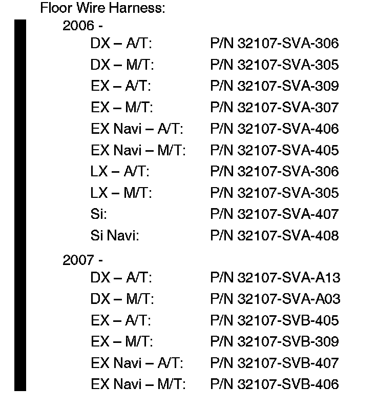
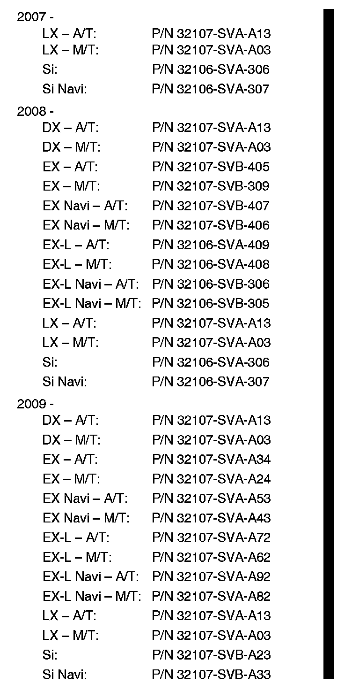
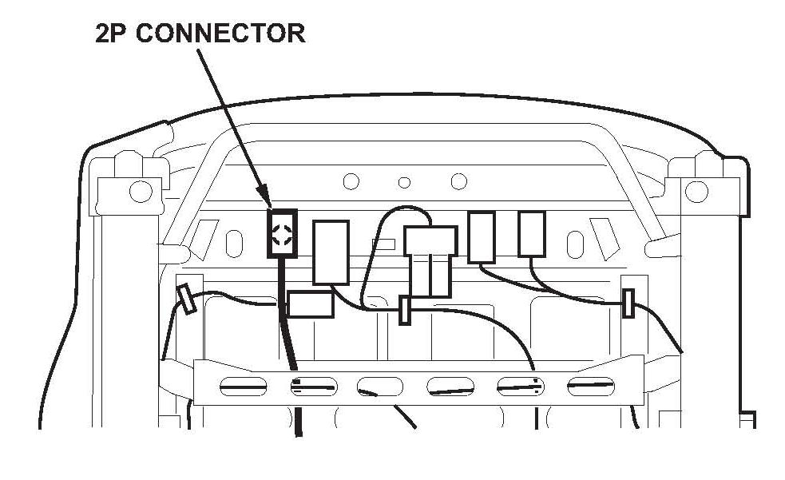

Restraints - SRS Lamp ON/DTC 32-10 Stored
10-001August 13, 2010
Applies To:
2006-09 Civic 2-Door - ALL
SRS Indicator Is On With DTC 32-10
(Supersedes 10-001, dated February 12, 2010, to revise the information marked by the black bars)
REVISION SUMMARY
Under PARTS INFORMATION, new P/Ns for the floor wire harness were added.
SYMPTOM
The SRS indicator is on, and DTC 32-10 (open in the front passengers side airbag inflator) is stored. This problem may be intermittent.
PROBABLE CAUSE
Under the front passengers seat, the SRS portion of the floor wire harness has a poor crimp in it.
CORRECTIVE ACTION
Diagnose the SRS DTC(s) and, only if needed, replace the floor wire harness.
PARTS INFORMATION


NOTE:
To make sure you order the correct floor wire harness, enter the VIN in your parts catalog search.
REQUIRED MATERIALS
Hondalock 2: P/N 08713-0002 (One bottle repairs about 25 vehicles.)
TOOL INFORMATION
KTC Trim Tool Set: T/N SOJATP2014
WARRANTY CLAIM INFORMATION
The normal warranty applies.
Diagnose the SHS DTC:
Operation Number: 723507
Flat Rate Time: 0.3 hour
Failed Part: P/N 32107-SVA-A32
Defect Code: 03214
Symptom Code: 03214
Skill Level: Repair Technician
Replace the Floor Wire Harness:
Operation Number: 7371B9
Flat Rate Time: 4.6 hours
Failed Part: P/N 32107-SVA-A32
Defect Code: 06801
Symptom Code: 03214
Skill Level: Repair Technician
DIAGNOSIS
1. Connect the HDS to the vehicle's DLC, and check for DTCs. If any DTCs other than 32-10 are indicated, troubleshoot them as needed.
2. Clear any DTCs.
3. Disconnect the HDS, then turn the ignition switch to LOCK (0), and back to ON (II).
Does the SRS indicator stay on?
Yes - Go to step 4.
No - This service bulletin does not apply.

4. Turn the ignition switch to LOCK (0). On the bottom of the front passenger's seat, disconnect the floor wire harness 2P connector (yellow) from the passenger's side airbag wire harness.
5. Reconnect the floor wire harness 2P connector, then connect the HDS, and clear the SRS DTC(s).
6. Disconnect the HDS, then turn the ignition switch to LOCK (0), and back to ON (II).
Does the SHS indicator stay on?
Yes - This service bulletin does not apply. Troubleshoot the SRS DTC(s) as needed.
No - Go to REPAIR PROCEDURE.
NOTE:
If the customer reported that the SRS indicator was previously on, use the HDS to check the DTC history. If you find DTC 32-10 in the DTC history, go to REPAIR PROCEDURE. If you do not find DTC 32-10 in the DTC history, this service bulletin does not apply. Continue with normal troubleshooting.
REPAIR PROCEDURE
NOTE:
^ Before you begin, make sure you know the SRS component locations, and that you read and understand the SRS precautions and procedures explained in the service manual.
^ This procedure is in an outline form that you can also use as a checklist for the repair. If you need more details on the topics listed below, bookmark them in the 2006-2010 Civic Service Manual, or view them online:
- Battery Terminal Disconnection and Reconnection
- Front Seat Removal/Installation
- Driver's Dashboard Undercover Removal / Installation
- Passenger's Dashboard Undercover Removal / Installation
- Kick Panel Removal/Installation
- Steering Joint Cover Removal/Installation
- Center Console Removal/Installation
- Rear Side Trim Panel Removal/Installation
- Rear Seat Removal/Installation
- Carpet Replacement
1. Do the battery terminal disconnection procedure, then wait at least 3 minutes.
2. Remove the front seats.
3. Remove the driver's and the passenger's dashboard undercovers.
4. Remove the driver's and the passenger's kick panels.
5. Remove the center console.
6. Remove the rear side trim panels.
7. Remove the rear seat-back and the rear seat cushion.
8. Remove the carpet.
9. Remove the floor wire harness, then install a new floor wire harness:
^ Refer to pages 22-50 thru 22-55 of the 2006-2010 Civic Service Manual, or
^ Online, enter keywords FLOOR WIRE, then select Floor Wire Harness and USB Harness (Left/Right branch) Connector and Harness Locations (2-Door) from the list for the model you're working on.
NOTE:
^ Do not bend or twist the new wire harness excessively, and make sure it is not pinched or too loose in any areas.
^ Make sure all the connectors on the new wire harness are secured.
^ Replace any damaged interior trim clips.
10. Reinstall the carpet:
^ Do not wrinkle or twist the carpet.
^ Make sure the seat harness connectors and the parking brake cables are routed correctly.
^ Push the Velcro fasteners and the clips securely into place.
^ Push the accelerator hooks securely into place, and make sure the accelerator pedal is correctly attached to the floor.
11. Reinstall the rear seat cushion:
^ Make sure there are no kinks or twists in the seat belts, then slip the seat belt buckles through the slits in the seat cushion as you install the seat cushion.
^ Torque the seat cushion mounting bolt to 9.8 N.m (7.2 lb-ft).
12. Reinstall the rear seat-back:
^ Make sure there are no kinks or twists in the center seat belt, then guide the center seat belt over the front of the seat-back as you install the seat-back.
^ Torque the pivot bracket bolt and the seat-back mounting bolts to 22 N.m (16 lb-ft).
^ Make sure the pivot bracket hooks are secured.
13. Reinstall the rear side trim panels. Make sure the clips, the hooks, and the tabs are secured.
14. Reinstall the center console. Torque the center console mounting bolts to 5 N.m (4 lb-ft).
15. Reinstall the steering joint cover.
16. Reinstall the driver's and the passengers kick panels. Make sure the clips are secured.
17. Reinstall the driver's and the passenger 5 dashboard undercovers. Make sure the clips are secured.
18. Reinstall the front seats:
^ Apply Hondalock 2 Thread lock to the seat bolts, then reinstall the bolts, and torque them to 34 N.m (25 lb-ft).
^ Make sure the floor harness connectors are securely connected to the connectors under the seats.
19. Do the battery terminal reconnection procedure.
20. Test-drive the vehicle, and make sure that all vehicle systems and controls are working properly.
21. Connect the HDS to the vehicle's DLC, and clear any DTCs that you find.

Disclaimer